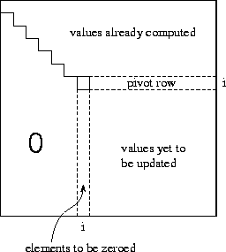

![[DBPP]](pictures//asm_color_tiny.gif)


![[Search]](pictures//search_motif.gif)
To further illustrate the use of HPF, we present a slightly more complex example. The problem considered is the Gaussian elimination method used to solve a system of linear equations
where A
is a known matrix of size N
 N
,
x
is the required
solution vector, and
b
is a known vector of size N
.
This example is often used in discussions of HPF as
it shows the benefits of cyclic distributions. The method proceeds in
two stages:
N
,
x
is the required
solution vector, and
b
is a known vector of size N
.
This example is often used in discussions of HPF as
it shows the benefits of cyclic distributions. The method proceeds in
two stages:
where U
is a matrix of size N
 N
in which all
elements below the diagonal are zero, and diagonal elements have the
value 1.
N
in which all
elements below the diagonal are zero, and diagonal elements have the
value 1.

Figure 7.10: The i
th step of the Gaussian elimination algorithm
in which nonzero subdiagonal elements in column i
are eliminated
by subtracting appropriate multiples of the pivot
row.
The Gaussian elimination stage of the algorithm comprises N-1 steps. In the basic algorithm, the i th step eliminates nonzero subdiagonal elements in column i by subtracting the i th row from each row j in the range [i+1,n] , in each case scaling the i th row by the factor so as to make the element zero. Hence, the algorithm sweeps down the matrix from the top left corner to the bottom right corner, leaving zero subdiagonal elements behind it (Figure 7.10).
For numerical stability, this basic algorithm is modified so that instead of stepping through rows in order, it selects in step i the row in the range [i,n] with the largest element in column i . This row (called the pivot ) is swapped with row i prior to performing the subtractions.
Program 7.7 is an HPF implementation of this algorithm. For efficiency, this program maintains the vector b in the N+1 th column of the array A . The first do-loop implements Gaussian elimination. The MAXLOC intrinsic is used to identify the pivot row. Rather than performing an explicit swap with row i , an indirection array called indx is used to keep track of the actual indices of selected rows. This array is updated once the pivot is identified. The next statement computes the N scale factors; notice that the computation can be performed with a single array assignment. Finally, the FORALL statement performs the subtractions. The mask ensures that the subtraction is performed only for rows that have not been previously selected as pivots ( Indx(j).EQ.0). Once the do-loop is complete, a second FORALL is used to reorganize the matrix into upper triangular form.
The last four lines of the program perform the back substitution. In reverse order from N to 1, each element of the solution is computed and then substituted into A to simplify the matrix.

Figure 7.11: Communication and computation in the various phases
of the HPF Gaussian elimination algorithm. Arrows represent
communication, and shading indicates tasks involved in computation in
each phase. The five phases are described in
Section 7.8.
Before developing data distribution directives for this
program, let us determine how much concurrency it exposes and what
data dependencies may lead to communication. We can think of the
data-parallel program as specifying a fine-grained partition comprising
N
 N
tasks, each responsible for a single element of
A
. (These tasks characterize the computation that would be
associated with data elements by the owner-computes rule.) As
illustrated in Figure 7.11, each of the
N-1
steps of the elimination algorithm involves five principal steps,
as follows:
N
tasks, each responsible for a single element of
A
. (These tasks characterize the computation that would be
associated with data elements by the owner-computes rule.) As
illustrated in Figure 7.11, each of the
N-1
steps of the elimination algorithm involves five principal steps,
as follows:
 independent operations,
one per task.
independent operations,
one per task.
Studying this algorithm, we see that it has two interesting attributes. First, there is little locality in communication beyond the fact that broadcasts and reductions are performed in rows and columns. Second, computation tends to be clustered: in each step, much of the computation is performed by tasks in a single row and column (before the FORALL) and in the bottom right-hand corner (the FORALL). These attributes can be exploited when developing data distribution directives to complete the parallel algorithm.
In many grid-based problems, we prefer to use a BLOCK distribution of the principal data structures because it reduces communication requirements by enhancing locality. However, in the Gaussian elimination problem, a BLOCK distribution has no communication advantages; furthermore, it causes many processors to be idle, particularly in the later stages of computation. In contrast, a CYCLIC distribution scatters computation over many processors and hence reduces idle time. Therefore, we could use the following data distribution directives.
!HPF$ ALIGN Row(j) WITH A(1,j)
!HPF$ ALIGN X(i) WITH A(i,N+1)
!HPF$ DISTRIBUTE A(*,CYCLIC)
Of course, the number of processors that can be used efficiently by this one-dimensional decomposition is limited. An alternative formulation, more efficient on large numbers of processors, decomposes A in two dimensions. This can be specified as follows.
!HPF$ ALIGN Row(j) WITH A(1,j)
!HPF$ ALIGN X(i) WITH A(i,N+1)
!HPF$ DISTRIBUTE A(CYCLIC,CYCLIC)
© Copyright 1995 by Ian Foster